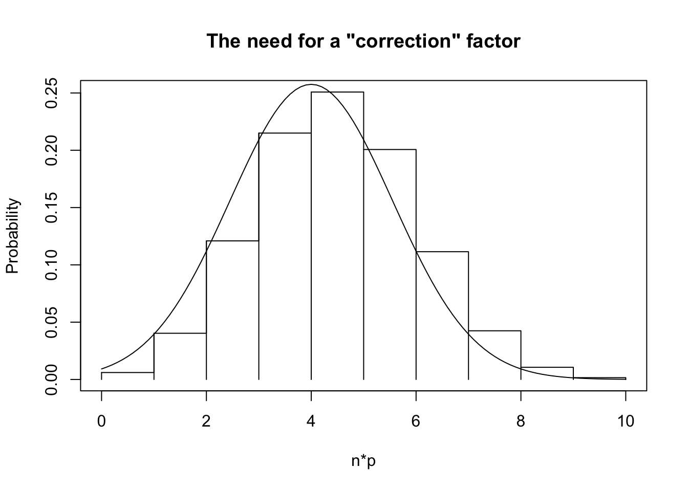

In the lecture on sampling distributions, we learned that the sampling distribution of a sample proportion can be found as follows:
If \(X\sim B(n,p)\) and \(np>10\) and \(n(1-p)>10\),1 then we can approximate the sampling distribution of \(\hat p\) as follows: \[
\hat p \sim N\left(p, \sqrt{\frac{p(1-p)}{n}}\right)
\]
This relies on the population proportion \(p\) to find the standard error, but this is never available. If it was, then why are we trying to do inference?
15.2 Hypothesis tests for proportions
As before, we write our hypotheses: \[
H_0:p = p_0 \text{ vs. } H_A: p \{>or<or\ne\} p_0
\]
We always write \(H_0:p = p_0\) and then fill in the value for \(p_0\), then we use that same value in the alternate hypothesis but use either \(>\), \(<\), or \(\ne\) based on the wording of the question.
As before, we use the sampling distribution to find our p-value. In this case, though, we have a hypothesized value for the population proportion. In fact, we must assume that the null is true.2 If this is the case, we do have the standard error!
I swear, this is the last time I introduce a new standard error for the sampling distribution of the sample proportion.3 Assuming \(H_0\) is true (and the conditions are met), \[
\hat p \sim N\left(p_0, \sqrt{\frac{p_0(1-p_0)}{n}}\right)
\]
The Test Statistic
As you can guess from the sampling distribution, the test statistic is:
and then we can use the normal distribution as usual: \[
P(Z \{>or<or\text{ further away than}\} z_{obs}) = \dots
\]
where we use \(>\) if the alternate hypothesis uses \(>\), \(<\) if the alternate hypothesis uses \(<\), and we look at the two tails if the alternate hypothesis is \(\ne\).
A common question is: which \(p\) do we use to check normality? We’re supposed to check \(np\) and \(n(1-p)\), but do we use \(\hat p\) or \(p_0\)?
For a hypothesis test, we assume the null is true, i.e. \(p=p_0\). We should use this assumption everywhere! For a hypothesis test about a proportion, we check whether \(np_0>10\) and \(n(1-p_0)>10\)4.
From here, we proceed as usual. We check the observed test statistic against a normal distribution5 and see whether our data are too extreme to come from the distribution assumed in the null hypothesis.
15.3 Example
Mendelian Genetics
To test his theory that 75% of plants would inheret a dominant gene, Gregor Mendel cross bred pure breeds of pea plants. Out of 7324 plants, 5474 showed the dominant trait. At the 4.5% level, is this compatible with the hypothesis of 75% dominant?
We doubled the \(P(Z < z_{obs})\) because we want both tails. If you do this and your p-value is larger than 1, do \(1 - P(Z < z_{obs})\) first and then double it.
Conclusion: Since our p-value is larger than \(\alpha\), we do not reject the null. The hypothesis that 75% of plants inherent the dominant trait is compatible with the data.
The last step is important: always word your conclusion in the context of the study.
These methods are extremely widespread, so of course they’re implemented in R. Here’s a verification of our results:
prop.test(x =5474, n =7324, p =0.75)
1-sample proportions test with continuity correction
data: 5474 out of 7324, null probability 0.75
X-squared = 0.24923, df = 1, p-value = 0.6176
alternative hypothesis: true p is not equal to 0.75
95 percent confidence interval:
0.7372578 0.7572926
sample estimates:
p
0.7474058
The output should look familiar - it’s very similar to the t-test output.
We can see that the p-value (be careful not to mix up the p-value and the estimate of \(p\), labelled p - these are very different things!) is a little different. Maybe it’s because of rounding errors? We calculated the z test statistic to the nearest 3 decimal places, maybe that wasn’t enough?
x <-5474n <-7324phat <- x / nse <-sqrt(0.75* (1-0.75) / n)2*pnorm((phat -0.75) / se)
[1] 0.6081484
Nope, it’s not a rounding problem!
The actual answer is that R uses a continuity correction factor (which isn’t going to be on the test for this course). The correction factor “shifts” the data so that the normal distribution aligns with the center of the bar, rather than the edge. See the following plot for why.

As you can see, the normal distribution aligns with the side of the bar. For values below the mean (in this case, \(n=10\) and \(p=0.4\), so the mean is 4), the normal distribution is overestimating the areas to the left, whereas above the mean it’s underestimating the areas to the left. The correction factor shifts the normal distribution to the right by 0.5 so that it’s a better estimate of the areas below the curve.
If we run prop.test() without the correction factor, we get the exact same p-value that we saw before.
prop.test(x =5474, n =7324, p =0.75, correct =FALSE)
1-sample proportions test without continuity correction
data: 5474 out of 7324, null probability 0.75
X-squared = 0.26288, df = 1, p-value = 0.6081
alternative hypothesis: true p is not equal to 0.75
95 percent confidence interval:
0.7373269 0.7572253
sample estimates:
p
0.7474058
These details are not important, just be aware that almost all tests for proportions are run with the continuity correction factor. You will not be doing this by hand on a test, so you can assume that R did the right things to make the calculations as correct as possible (but R will not do anything to make sure that the test is appropriate for the data).
Mendelian Genetics Confidence Interval
Recall from last lecture the duality of the CI and the hypothesis test. For this question, a 95.5%6 CI matches what we used before.
In order to find the confidence interval, we again need the standard error! In the hypothesis test, we assumed that \(p_0\) was the true population proportion in order to proceed with the test. However, we don’t make this assumption for confidence intervals. In other words, there is no \(p_0\) value that we can use. We haven’t made any hypotheses for a p CI.
What can we do? We don’t have \(p\) or \(p_0\), so we’re left with \(\hat p\), the sample proportion that we calculated. In the t-test, this meant that we needed to switch to the \(t\) distribution. However, that was because there was really good theory to say that the \(t\) distribution is the correct distribution to use. There’s no such theory here.
The standard error is still the same, we just use \(\hat p\) in place of \(p\): \[
SE = \sqrt{\dfrac{\hat p(1 - \hat p)}{n}}
\] and our confidence interval is, again, \[
\text{Point Estimate }\pm\text{ Critical Value} * \text{Standard Error} = \hat p \pm z^*\sqrt{\dfrac{\hat p(1 - \hat p)}{n}}
\]
CIs for Proportions Only Work When the CLT Applies
The \(t\)-distribution allows us to do hypothesis tests and make CIs even for smaller samples when we’re not sure that the CLT applies. For proportions, we need a “large” sample.
Now that we know all this, the CI can be found as: \[
\hat p \pm z^*\sqrt{\frac{\hat p(1-\hat p)}{n}} = 0.747 \pm 2.005\sqrt{\frac{0.747(1-0.747)}{7324}}
\]
which results in the CI (0.737, 0.757). This matches the CI shown in the output of prop.test() above (double check this!).
Non-Duality of Hypotheses and CIs
For the t-test, a CI can be interpreted as “every value that would not be rejected by a hypothesis test.”
For proportions, it is not true. This is because the CI and the hypothesis test use different standard errors. This is a very important point: the hypothesis test uses \(p_0\) in the standard error formula, while CIs use \(\hat p\), and thus the standard errors will be different.
15.4 Exact Test for Binomial
In this course, we have used the normal approximation to the binomial in order to do hypothesis tests. This is not the only way to do it: we don’t always need to use the approximation! There’s something called the “exact binomial test”, which is a hypothesis test that uses the binomial distribution rather than the normal approximation (this will not be on tests).
There are two main reasons why we might prefer the approximation, rather than using the exact test:
If we have a large sample, then the approximation and the exact test are very very close. The approximation is computationally simpler.
If we have a small sample, neither tests can accurately approximate the variance of the population, and thus the estimated standard error isn’t well estimated either.
Because the binomial distribution is discrete, the p-values for many different test statistics will be the same. By setting \(\alpha\), we might not actually be getting \(\alpha\).
This is a technical point that can be safely ignored when studying for tests.
The exact test can be performed using the binom.test() function in R. You will never have to choose between the two on an exam in this course. You will be given only the one that you need (usually binom.test() for one sample proportions, and prop.test() for two-sample proportions).
15.5 Example: Titanic Survivors
Did women have a 50% chance of surviving the sinking of the titanic? Let’s test this at the 10% level, since we’d be pretty easily convinced.
Since this is categorical data, we’ll use a bar plot.
From the bar plot, it’s pretty clear that the prportion of survivors is different from 50%. Let’s confirm this statistically!
We’re only interested in the female survivors for this analysis, so we’ll focus on that aspect of the bar plot.
# A tibble: 4 × 3
# Groups: Sex [2]
Sex Survived Freq
<fct> <fct> <dbl>
1 Male No 1329
2 Male Yes 338
3 Female No 109
4 Female Yes 316
From this output, we know that there were 316 female survivors out of 316 + 109 = 425 women total. Let’s report these numbers to R:
1-sample proportions test with continuity correction
data: 316 out of 425, null probability 0.5
X-squared = 99.849, df = 1, p-value < 2.2e-16
alternative hypothesis: true p is not equal to 0.5
95 percent confidence interval:
0.698733 0.783840
sample estimates:
p
0.7435294
The default hypothesis is that the proportion is equal to 0.5, so we didn’t have to change anything. From this, it is clear that the null hypothesis should be rejected. We conclude that the percentage of women who survived the sinking of the Titanic is different from 50%7.
15.6 Summary
CIs and Hypothesis Tests work exactly as they did before, but now we’re dealing with proportions. Just like the change from one sample to two sample \(t\) tests, the standard error is important and difficult.
For hypothesis tests, the standard error uses \(p_0\).
For CIs, the standard error uses \(\hat p\).
Interpreting these confidence intervals and hypothesis tests is very similar to before, but you must keep in mind that they’re proportions. This mainly affects how you describe the end results.
There are two other wrinkles to consider when using proportions:
The default test for proportions is the normal approximation with continuity correction.
It is possible, but not recommended, to not use continuity correction.
There is also an exact test, but for large samples the approximation is faster and easier.
15.7 Self-Study Questions
When do we use \(\hat p\) in the standard error? When do we use \(p_0\)?
Explain why we don’t estimate the standard error in a hypothesis test about a proportion.
Explain in your own words why there’s no \(t\) version of a hypothesis test for proportions.
Write a good summary of the Mendelian genetics example. What did we conclude, and how is this knowledge useful?
Repeat the Titanic survivors example but with male passengers.
As before, both conditions must be true; it’s not enough for just \(np_0>10\) alone.↩︎
We do not use a t distribution for this. The \(t\) distribution was used to account for the variance in the sampling distribution for \(s\) - the standard error for proportions is still based on \(p\), which means that there is no added variance!↩︎